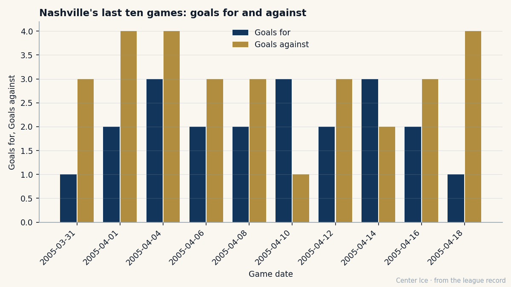

TOR
TOR COL
COL DET
DETThe 226th Pick Is the Best Player in the Building: Tomas Vokoun, $0.90M, and the $27.16M Foundation
He played in Wheeling, West Virginia. He allowed four goals in 20 minutes for Montreal. He is now the highest-rated man on the most prestigious roster in hockey.
 Carol BinghamFeatures writer · Rinkside
Carol BinghamFeatures writer · RinksideThe Bureau's Book has  Tomas Vokoun90 at 90. That is the highest grade on the
Tomas Vokoun90 at 90. That is the highest grade on the  Nashville Predators roster. He costs $0.90M. He has two years left on the deal.
Nashville Predators roster. He costs $0.90M. He has two years left on the deal.
Nashville finished the season with 101 points on a payroll of $46.77M. The per-point cost is $0.46M. The club turned $27.16M in profit on $81.56M in revenue. Their prestige stands at 722, the highest in the league, and they have never won a Cup. All of that traces back to a goaltender taken 226th overall in 1994.

Vokoun's road to that number took eleven years and three countries. He stayed home in Karlovy Vary for a year after Montreal drafted him, playing for Poldi Kladno. He came to North America in 1995-96 and went to the Wheeling Thunderbirds of the ECHL. A call-up to Fredericton in the AHL followed. He played one game for the Canadiens that season: four goals allowed in 20 minutes against Philadelphia.
Then the Canadiens let him go.
Nashville claimed him in the 1998 Expansion Draft. He spent the next season splitting time between the NHL and the AHL. By 2000 he was the backup behind  Mike Dunham88. In 2002, Dunham was traded to the Rangers and Vokoun became the starter by default, a man handed a job because the other man left.
Mike Dunham88. In 2002, Dunham was traded to the Rangers and Vokoun became the starter by default, a man handed a job because the other man left.
Three years later he made the All-Star Game. He was the reason Nashville reached the playoffs for the first time in franchise history last spring, winning five of nine games in a series they lost. This season he went 38-27-1 with a 2.45 GAA and a .877 save percentage. He started 66 of 82 games. The Predators lost to  Mighty Ducks of Anaheim in the first round this year, four games to two.
Mighty Ducks of Anaheim in the first round this year, four games to two.
The contract tells you more than the season line.  Jose Theodore93 is 91 at $5.50M.
Jose Theodore93 is 91 at $5.50M.  Jocelyn Thibault89 is 90 at $2.80M.
Jocelyn Thibault89 is 90 at $2.80M.  Roman Cechmanek90 is 91 at $3.30M.
Roman Cechmanek90 is 91 at $3.30M.  Patrick Lalime90 is 90 at $1.90M. Vokoun is 90 at $0.90M, the cheapest goaltender in the league with a grade above 85.
Patrick Lalime90 is 90 at $1.90M. Vokoun is 90 at $0.90M, the cheapest goaltender in the league with a grade above 85.
That number is why the Nashville payroll works. The whole roster is built on the same principle that built his deal: take what the market undervalues, pay it what it can be paid, and keep the surplus.  Martin Erat84, 79 on the Book, played 79 games.
Martin Erat84, 79 on the Book, played 79 games.  Scott Hartnell82, 78 on the Book, played 82. The young wings carry the cost curve the way Vokoun does, on cheap deals that outperform their price.
Scott Hartnell82, 78 on the Book, played 82. The young wings carry the cost curve the way Vokoun does, on cheap deals that outperform their price.
Som Richards, Nashville's general manager, told The Tunnel after the season ended that the philosophy was by design. "The core is locked. And that gives me something most of these clubs don't have right now. I can wait in free agency. I don't have to panic in July because three guys are walking out the door." He was talking about the whole room. Vokoun is the proof case. A 90-grade goaltender with two years left at $0.90M is not panic material.
722 prestige points mean the league respects what Nashville has built, even without a Cup. No other club has built prestige so high so fast. Detroit has 474 with zero Cups. Colorado has 498. Toronto, the reigning champion, sits at 635. Nashville has 722 on a payroll of $46.77M, the sixth-cheapest in the league.
Vokoun was not the centerpiece of a plan. He was a claim. He was a backup who inherited a job when someone else was traded away. He is 28 years old, 72 inches tall, 197 pounds, shoots right, from Karlovy Vary. The Bureau's Development Index does not list him among the risers or the fallers. He is not improving on the Book and he is not falling off it. He is exactly what he is, and what he is, at this price, makes a $27.16M profit.
What the model costs
The last ten games of the regular season produced two wins and 21 goals for against 30. That stretch decided a first-round seeding. It did not break anything structural. Vokoun was in net for most of it. The machine that makes $27.16M in profit still ran at a level that earns 101 points and 722 prestige.
The question for Vokoun, and for the club, is what happens after these two years. His contract ends. He will be 30 years old with a 90-grade season behind him and no reason to accept $0.90M from anyone. Theodore at the same grade costs $5.50M. Thibault at the same grade costs $2.80M. The market will find Vokoun eventually.
Richards said he can wait. The core is locked. But locked means two years on a goaltender, not forever. What happens when the 226th pick decides he wants to be paid like a first-round one.